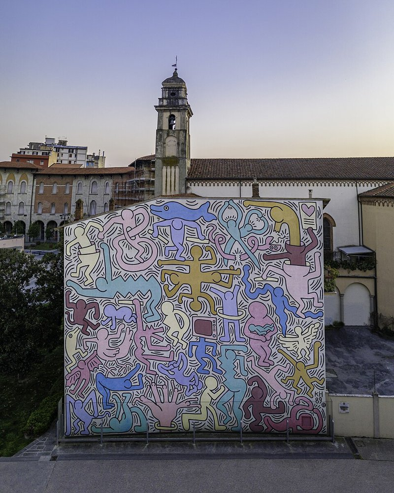

Tuttomondo
Keith Haring · 1989 · Paint on an outside wall (mural) · 180 m²
In copyright. Look and learn: shown for study, not for download. · Photo: Guglielmo Giambartolomei, CC BY-SA 4.0
The mural covers 180 square metres of the southern outside wall of the church of Sant'Antonio Abate in Pisa, and Haring painted it in a week in June 1989. It came about because a Pisan student, Piergiorgio Castellani, met him on the street in the East Village and invited him to Italy. It holds thirty figures. Haring had been diagnosed with AIDS the autumn before, and he died in February 1990.